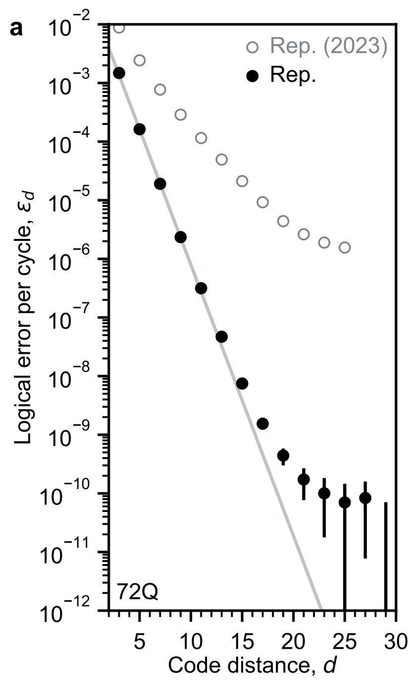
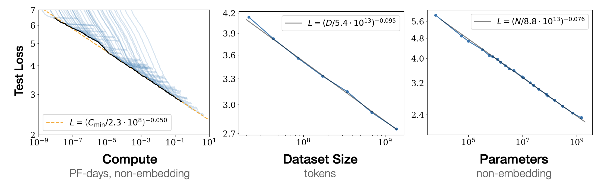
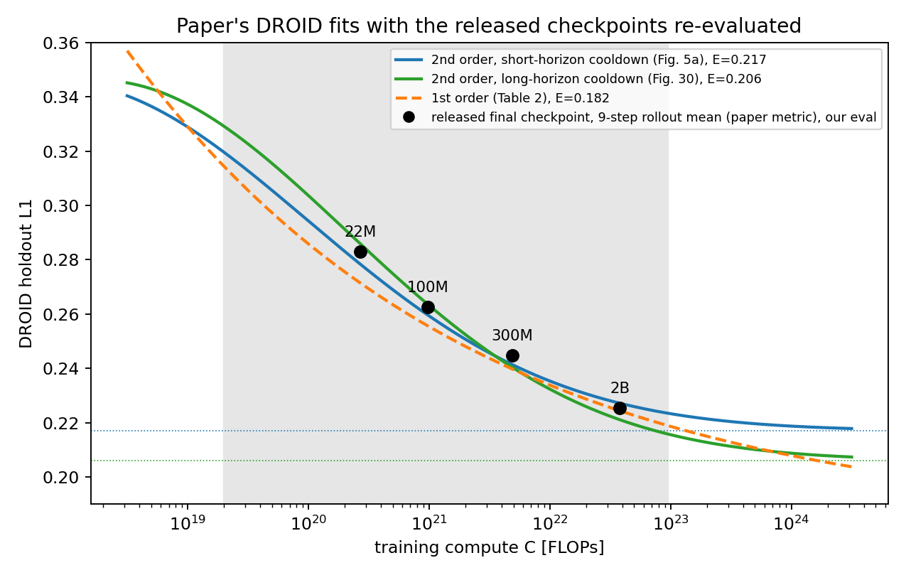
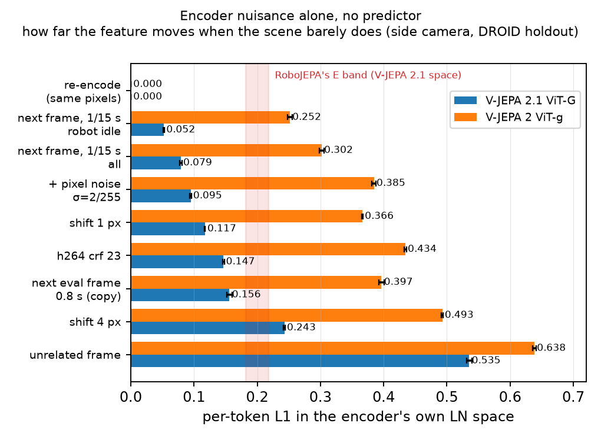
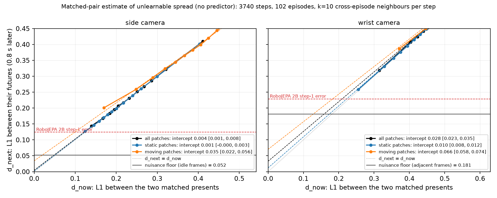

Where is the floor for the world?
Error floors are spooky, and show up in quantum error corrected system design and, now apparently, in RoboJEPA latent world models for robotics. I share a bit more about these floors here.
1
Error floors are spooky. When I'm thinking about quantum error corrected systems in particular, lots of design work goes into building nice and scalable families of codes that, in principle should be able to continue getting better and better at error suppression as needed. I spend a lot of time designing codes, circuits, and protocols with good pseudothresholds (the point where the performance of the code crosses the performance of the raw unprotected machine), with good error suppression scaling coefficients, and with good architectural properties. I look at lots of things including analytically dissecting the ways that errors propagate throughout the circuit, how the decoder handles the highest-likelihood failure mechanisms, and numerically measure scaling constants like the logical error rate and the ratio of this error rate between subsequent code distances. In general, we typically find that quantum error correcting codes of code distance suppress logical errors over and above some physical error rate at a rate exponential in how far the system is below pseudothreshold:
for some constants and , both of which depend on the implementation. This is an important error suppression scaling law that has anchored effectively all of fault tolerant quantum system design.
This, and measurements like this, are summary statistics and should be treated with appropriate caution because of that. In fact when we do this kind of work we have to make assumptions about error models and devices, and sometimes those assumptions don't match the systems that get deployed. This is one of the main concerning points about building scalable fault tolerant quantum systems: what happens if our expectations about the type, quality, and structure of the noise affecting the quantum systems are wrong? There remain many orders of magnitude between the system sizes and effective noise regimes of the devices that are online today, and where they need to go to perform useful quantum algorithms. Of course, we can't faithfully simulate the full device physics of the devices we'll need at that scale, so we make approximations that we believe are faithful-enough and design to those. This has driven lots of very meaningful progress in quantum systems design research over time.
But what happens if we're wrong? Specifically, what happens when we're wrong about the structure of the noise in the system?

This can happen, and in fact already did in a prominent system experimental paper [1]. There, a superconducting qubit device was running large block-length repetition codes expressly for this purpose, to probe whether error floors pop up. They do, and they break the error suppression caling laws that may be observed between lower code distances. Lots of work has since gone on in rearchitecting devices and attempting to design to the expected causes of these floors, including considering ways to modify our existing noise modeling and approximation methods. If there is any fundamental reason that quantum information processing devices can't be built to the scale we need, the signature will be one of these floors.
2
Error floors show up in lots of places. One that is interesting and seems important is the very recent work on building world models for robotics: the RoboJEPA work [2]. Here, the authors present the first known scaling laws for compute frontiers in latent-space representation world models, and show that the scaling laws they're seeing are quite different from those in language models. One of the most important distinctions is that the world model scaling law has quite a high empirical error floor, while the language model scaling laws seem to push this much lower. That's spooky.
For reference, let's look at the scaling laws in language models first. Kaplan et al. first discovered the compute frontier scaling laws for neural networks in 2020 [3]. They were looking for and measuring scaling laws in Transformer language models, specifically covering compute, dataset size, and model size, and measuring the sensitivity of the test loss to each of these. The parametric form of the scaling laws looks like simple power laws where, for example, when a Transformer model is limited to a fixed number of parameters , loss scales as for and . The former is their way of normalizing out the number of non-embedding parameters (so as to only focus on the important trainable parameters that the model is updating), and the latter is a numerical power law exponential fit that they found numerically fit the best.

These are clean power laws and don't show any sign of any error floors. They match intuitively with how we imagine exponential error suppression in quantum error corrected systems scales, substituting normalizing constants in the base of each exponent appropriately, and at a fixed code distance. The Hoffman et al. Chinchilla paper [4] came out later and argued that the Kaplan work under-trained models, and they could reach far better performance at fixed model size if the ratio of compute to parameters increased. Their parametric fit looks different as well:
where , , and are the fitting terms, is the model size, is the number of training tokens, and is an irreducible term that corresponds to the entropy of natural language. So here we actually do encounter an error floor, set by the fact that natural language itself carries an irreducible entropy that no model is going to be capable of learning. Later work from Pearce and Song [5] came out that reconciled these forms basically by counting all of the parameters (instead of just the non-embedding parameters), and from compute range fitting.
This behavior apparently changes in robotics world models, at least for some architectures. The RoboJEPA paper [2] was able to measure these curves for a specific set of architectures that are promising latent-state world models for enabling physical world interaction. The architecture itself is a hybrid, starting from a learned latent space that the V-JEPA 2.1 encoder produces, and within that space they train a Transformer-based predictor to operate and act. They propose and show good agreement with what they call a second-order power law:
where , and are fitting variables, is compute, and here is some form of irreducible error. An error floor.
3
This second order scaling law itself is interesting. It's easier to look at it in a simpler form:
In this form we can more clearly pick out the second-order behavior, which is the squared gamma-controlled factor. We can plot this, and plug in the fits that the paper found, to more clearly see what's going on. A plain power law is a straight line in log-log space, something of the form would recover it in this context (and the paper fit one of these as well). The quadratic term creates a parabola. Let's focus on the DROID dataset and loss.

Grabbing the checkpoints for the different models and overlaying them on this set of fits, we can see convergence to different values of being reached by the second-order model fits to the different cooldown policies (these values are drawn as horizontal dashed lines), and each of these says something quite different about the value of pushing more training compute and model sizes through this architecture. We can also see visually significant residuals from this second-order power law fit, admittedly significantly worse for the smaller models on the first order fit. As these models get bigger, and as the training compute increases, are these going to converge to the predicted values? Or will they keep diving past these as the (seemingly better at larger compute) first-order scaling law fit would suggest? If we could show that loss continues to dive, that's a big reason to push scaling these architectures.
4
So what is ? If we understand this term interpretably, or can actually lower bound it independently of these empirical training curves, we could get at our question above from a different angle. So here let's try to do some interpretability work and understand it from a model internals and theory perspective. In language models it seems well understood that it captures some form of “the natural entropy of language". Language itself carries ambiguity that no model can actually figure out, and that lumps together to form . What's the equivalent here in world modeling?
The RoboJEPA paper approaches as a fitting constant, mainly discussing it as an irreducible loss term that has value predicted by a few different fit models converging to some amount. In a real sense is just a fitting constant, but there is a lot of value in trying to understand and interpret it mechanically before treating it as a true measure of data saturation. One way to do this is to treat the predictor Transformer network distinctly from the V-JEPA encoder, and to assess just how much ambiguity there is in the JEPA latent representation itself. This effectively considers the latent space that JEPA builds as a language with an intrinsic entropy, which is also nice in that it should give us some intuition as to how well a Transformer architectural predictor should perform. Said another way: is measurable as the asymptote of a predictor running against a frozen encoder, and a deterministic L1 regressor type predictor like this can at best emit the conditional median of the next feature, so there should be a fundamental irreducible error floor that is set by whatever spread the target has that the past cannot predict. For these world model latent space representations, this could be driven by encoder nuisance or feature instability in the face of small imperceptable perturbations, and separately by dynamics uncertainty or genuinely uncertain futures given certain actions. The main question I had was: how much of is the predictor's contribution, and how much is contained in native latent-space ambiguity?
A simple thing to start with is wiggling stuff. I took the frames from the DROID dataset that is held-out in the paper, from side camera. Each of those frames I then ran through the V-JEPA encoder, then perturbed the frame slightly in different ways and ran those through the encoder again, and measured the per-token latent space L1 distance in the LayerNorm (LN) space. I did this for V-JEPA 2.1 and for V-JEPA 2, and you can see right away (at least one of the reasons) why the RoboJEPA system failed to train with the frozen V-JEPA 2 encoder.

For most natural nuisances/ablations/perturbations/etc., the maximum LN space token L1 distance is far below the RoboJEPA measured values (at least for V-JEPA 2.1). That's compelling, seems that the encoder isn't necessarily setting this floor with per-token ambiguity alone. For an idling robot, the next frame 1/15s later is 0.052-away in L1 distance. It's 0.079-away across all actions. Sensor noise with somewhat reasonable moves these features by a bit more, as does shifting by a full pixel. If you shift the full image by 4 pixels, then you can exceed the measured value. So overall, this seems smaller than and unlikely to explain it alone.
The next thing I tried is to separate the natural ambiguity of the encoder from the natural uncertainty in the future given an action, or dynamics uncertainty. That should be measurable too, only using the latent representation space. The idea is to measure dynamics uncertainty, measured as the spread of next-latent states given the same state and action. This is a trajectory-dependent measure, so we can study it by running a controlled experiment on the existing DROID episodes. I took every (context, action, next-feature) triplet in the held-out DROID dataset from the REAL “setup room", amounting to roughly 7k total steps. For each of these tuples I find its nearest neighbours in from a different episode. To modulate-out temporal adjacency I also use neighbors from the same episode at least several seconds away. For each pair record two numbers: how far apart the presents are, plus a scaled action mismatch, and how far apart the futures are, What we get for this the expected L1 distance between two independently drawn trajectories from the same conditional, which (because an L1-optimal predictor is deterministic) is a fixed multiple of the irreducible error . So the intercept of a regression here should represent this expected distance (it will also contain nuisance, so we can subtract that out). The net effect of this study then is an estimator of the true dynamical uncertainty (I think people call this aleatoric...).

The data isn't granular enough to produce a useful answer here. These figures show what I mean: each dot is a bin of matched pairs. Horizontal position is how far apart the two “present" tuples are. Vertical is how far apart their “futures" were 0.8 seconds later. What we see is nearly exact linearity, where the futures show up as nearly as close as the presents. The leftmost point shows a signal floor from this study. On the side camera the closest matches start at 0.13, while on the wrist it shows up at 0.26. The intercepts printed in the legends come from that extrapolation, which we don't have sufficient data to really defend yet. The reference lines are drawn on top to show how close these are to the other measured error floors. The grey nuisance floor at 0.052 is the lower bound, and the red 2B step-1 error at 0.123 is the model. The data never gets below 0.13, so it never enters the band between them. While this study seems well-designed, the data limits it from really showing us clear answers. A next step to help resolve this is to directly generate new simulation data that ablates the futures by fixing an identical state, apply the identical action, and sample several futures, which I might try.
5
While none of this is conclusive, it seems likely to me that there's lots of room still afforded by the V-JEPA 2.1 latent space for predictors to learn. It would be very interesting to see larger models continue to train to properly fill out the compute/model size curve, and to see if this system keeps following the flattening second-order curve or whether some threshold already exists in the curve that pushes the loss deeper, faster. The V-JEPA latent representation space native ambiguity study seems to also say there's enough learnable signal that this could be possible.
A lot of this type of analysis is quite similar to the work we do in quantum computing systems research. Turns out thinking a lot about modeling the behavior of unknown systems, dissecting error floors into interpretable pieces, and deciding what and how to measure to buy down uncertainty gives you a nice transferable perspective.
References
- [1] Acharya, Rajeev, Aghababaie-Beni, Laleh, Aleiner, Igor, Andersen, Trond I., Ansmann, Markus, Arute, Frank, Arya, Kunal, Asfaw, Abraham, Astrakhantsev, Nikita, Atalaya, Juan, Babbush, Ryan, Bacon, Dave, Ballard, Brian, Bardin, Joseph C., Bausch, Johannes, Bengtsson, Andreas, Bilmes, Alexander, Blackwell, Sam, Boixo, Sergio, Bortoli, Gina, Bourassa, Alexandre, Bovaird, Jenna, Brill, Leon, Broughton, Michael, Browne, David A., Buchea, Brett, Buckley, Bob B., Buell, David A., Burger, Tim, Burkett, Brian, Bushnell, Nicholas, Cabrera, Anthony, Campero, Juan, Chang, Hung-Shen, Chen, Yu, Chen, Zijun, Chiaro, Ben, Chik, Desmond, Chou, Charina, Claes, Jahan, Cleland, Agnetta Y., Cogan, Josh, Collins, Roberto, Conner, Paul, Courtney, William, Crook, Alexander L., Curtin, Ben, Das, Sayan, Davies, Alex, Lorenzo, Laura De, Debroy, Dripto M., Demura, Sean, Devoret, Michel, Paolo, Agustin Di, Donohoe, Paul, Drozdov, Ilya, Dunsworth, Andrew, Earle, Clint, Edlich, Thomas, Eickbusch, Alec, Elbag, Aviv Moshe, Elzouka, Mahmoud, Erickson, Catherine, Faoro, Lara, Farhi, Edward, Ferreira, Vinicius S., Burgos, Leslie Flores, Forati, Ebrahim, Fowler, Austin G., Foxen, Brooks, Ganjam, Suhas, Garcia, Gonzalo, Gasca, Robert, Genois, Élie, Giang, William, Gidney, Craig, Gilboa, Dar, Gosula, Raja, Dau, Alejandro Grajales, Graumann, Dietrich, Greene, Alex, Gross, Jonathan A., Habegger, Steve, Hall, John, Hamilton, Michael C., Hansen, Monica, Harrigan, Matthew P., Harrington, Sean D., Heras, Francisco J. H., Heslin, Stephen, Heu, Paula, Higgott, Oscar, Hill, Gordon, Hilton, Jeremy, Holland, George, Hong, Sabrina, Huang, Hsin-Yuan, Huff, Ashley, Huggins, William J., Ioffe, Lev B., Isakov, Sergei V., Iveland, Justin, Jeffrey, Evan, Jiang, Zhang, Jones, Cody, Jordan, Stephen, Joshi, Chaitali, Juhas, Pavol, Kafri, Dvir, Kang, Hui, Karamlou, Amir H., Kechedzhi, Kostyantyn, Kelly, Julian, Khaire, Trupti, Khattar, Tanuj, Khezri, Mostafa, Kim, Seon, Klimov, Paul V., Klots, Andrey R., Kobrin, Bryce, Kohli, Pushmeet, Korotkov, Alexander N., Kostritsa, Fedor, Kothari, Robin, Kozlovskii, Borislav, Kreikebaum, John Mark, Kurilovich, Vladislav D., Lacroix, Nathan, Landhuis, David, Lange-Dei, Tiano, Langley, Brandon W., Laptev, Pavel, Lau, Kim-Ming, Guevel, Loïck Le, Ledford, Justin, Lee, Kenny, Lensky, Yuri D., Leon, Shannon, Lester, Brian J., Li, Wing Yan, Li, Yin, Lill, Alexander T., Liu, Wayne, Livingston, William P., Locharla, Aditya, Lucero, Erik, Lundahl, Daniel, Lunt, Aaron, Madhuk, Sid, Malone, Fionn D., Maloney, Ashley, Mandrá, Salvatore, Martin, Leigh S., Martin, Steven, Martin, Orion, Maxfield, Cameron, McClean, Jarrod R., McEwen, Matt, Meeks, Seneca, Megrant, Anthony, Mi, Xiao, Miao, Kevin C., Mieszala, Amanda, Molavi, Reza, Molina, Sebastian, Montazeri, Shirin, Morvan, Alexis, Movassagh, Ramis, Mruczkiewicz, Wojciech, Naaman, Ofer, Neeley, Matthew, Neill, Charles, Nersisyan, Ani, Neven, Hartmut, Newman, Michael, Ng, Jiun How, Nguyen, Anthony, Nguyen, Murray, Ni, Chia-Hung, O'Brien, Thomas E., Oliver, William D., Opremcak, Alex, Ottosson, Kristoffer, Petukhov, Andre, Pizzuto, Alex, Platt, John, Potter, Rebecca, Pritchard, Orion, Pryadko, Leonid P., Quintana, Chris, Ramachandran, Ganesh, Reagor, Matthew J., Rhodes, David M., Roberts, Gabrielle, Rosenberg, Eliott, Rosenfeld, Emma, Roushan, Pedram, Rubin, Nicholas C., Saei, Negar, Sank, Daniel, Sankaragomathi, Kannan, Satzinger, Kevin J., Schurkus, Henry F., Schuster, Christopher, Senior, Andrew W., Shearn, Michael J., Shorter, Aaron, Shutty, Noah, Shvarts, Vladimir, Singh, Shraddha, Sivak, Volodymyr, Skruzny, Jindra, Small, Spencer, Smelyanskiy, Vadim, Smith, W. Clarke, Somma, Rolando D., Springer, Sofia, Sterling, George, Strain, Doug, Suchard, Jordan, Szasz, Aaron, Sztein, Alex, Thor, Douglas, Torres, Alfredo, Torunbalci, M. Mert, Vaishnav, Abeer, Vargas, Justin, Vdovichev, Sergey, Vidal, Guifre, Villalonga, Benjamin, Heidweiller, Catherine Vollgraff, Waltman, Steven, Wang, Shannon X., Ware, Brayden, Weber, Kate, White, Theodore, Wong, Kristi, Woo, Bryan W. K., Xing, Cheng, Yao, Z. Jamie, Yeh, Ping, Ying, Bicheng, Yoo, Juhwan, Yosri, Noureldin, Young, Grayson, Zalcman, Adam, Zhang, Yaxing, Zhu, Ningfeng, Zobrist, Nicholas, Quantum error correction below the surface code threshold, arXiv (2024).
- [2] Zholus, Artem, Beltran-Velez, Nicolas, Yuan, Jianhao, Chandar, Sarath, Nagarajan, Tushar, Severo, Daniel, Sinha, Koustuv, Drozdzal, Michal, Soriano, Adriana Romero, Bohg, Jeannette, Ballas, Nicolas, Assran, Mahmoud, RoboJEPA: Scaling Robotic Latent World Models, arXiv (2026).
- [3] Kaplan, Jared, McCandlish, Sam, Henighan, Tom, Brown, Tom B., Chess, Benjamin, Child, Rewon, Gray, Scott, Radford, Alec, Wu, Jeffrey, Amodei, Dario, Scaling Laws for Neural Language Models, arXiv (2020).
- [4] Hoffmann, Jordan, Borgeaud, Sebastian, Mensch, Arthur, Buchatskaya, Elena, Cai, Trevor, Rutherford, Eliza, Casas, Diego de Las, Hendricks, Lisa Anne, Welbl, Johannes, Clark, Aidan, Hennigan, Tom, Noland, Eric, Millican, Katie, Driessche, George van den, Damoc, Bogdan, Guy, Aurelia, Osindero, Simon, Simonyan, Karen, Elsen, Erich, Rae, Jack W., Vinyals, Oriol, Sifre, Laurent, Training Compute-Optimal Large Language Models, arXiv (2022).
- [5] Pearce, Tim, Song, Jinyeop, Reconciling Kaplan and Chinchilla Scaling Laws, arXiv (2024).